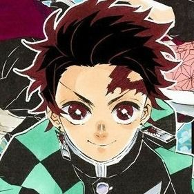
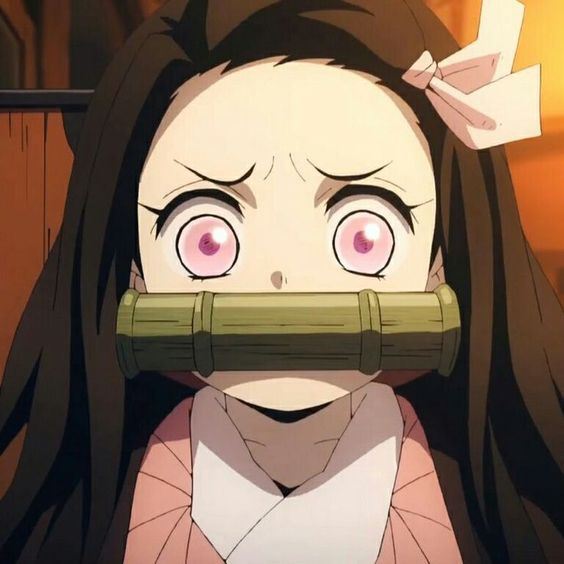
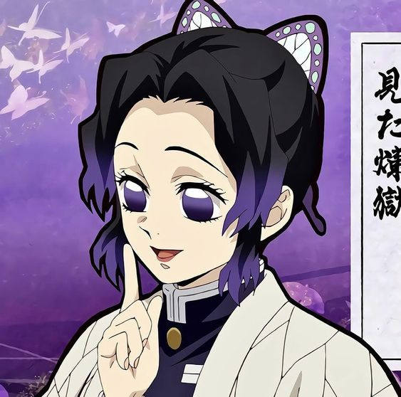
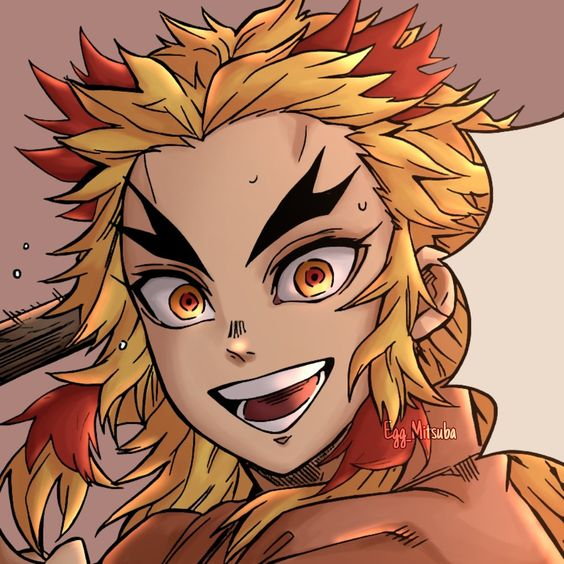
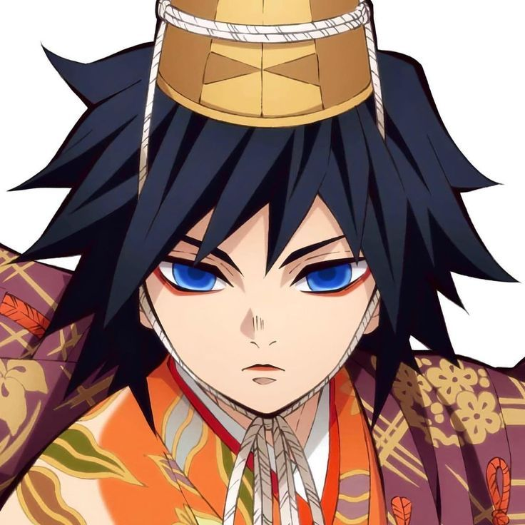
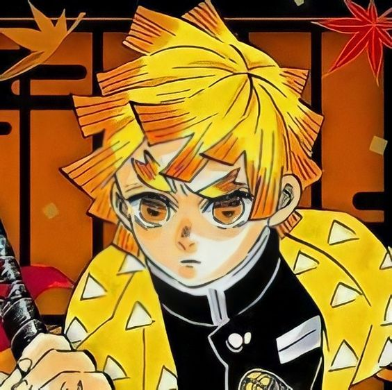
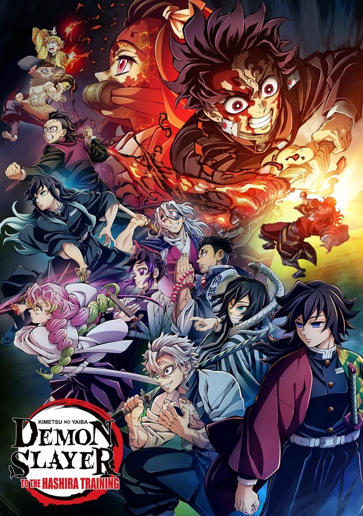
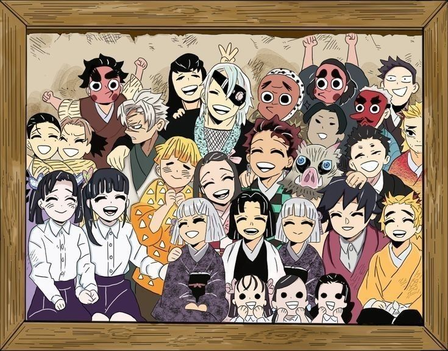

WELCOME DEMONSLAYER
TANJIRO KAMADO

The main protagonist of Demon Slayer: Kimetsu no Yaiba. He is a Demon Slayer in
the Demon Slayer Corps who joined to find a remedy to turn his sister, Nezuko Kamado, back into
a human.
NEZUKO KAMADO

"Things don’t go exactly the way we want them to. We’re only human. You get to
decide where your happiness comes from. What’s important is now."
SHINOBU KOCHO

"I once believed that the road of happiness continued forever and ever into the
distance. When it was destroyed, I realized for the first time that it lies upon a thin sheet of
glass."
KYOJURO RENGOKU

"Life is a series of decisions. You never have unlimited options or unlimited time
to think, but what you choose in that instant defines who you are."
GIYU TOMIOKA

"Don't cry. Don't despair. Now's not the time for that."
ZENITSU AGATSUMA

"I hate myself more than anyone. I always think I have to get my act together, but
I end up cowering, running away, sniveling. I want to change. I want to be a competent person."


DISCUSSIONS

Tengen managed to defeat an Upper Moon Demon because of the technique he developed called Musical Score (譜ふ面めん ) using his heightened sense of hearing to work in conjunction with his Sound Breathing.

The blue spider Lily was introduced when we knew Muzan wanted to find it for a cure for his weakness to sunlight and he couldn't. But was there any point in using this flower for the plot?